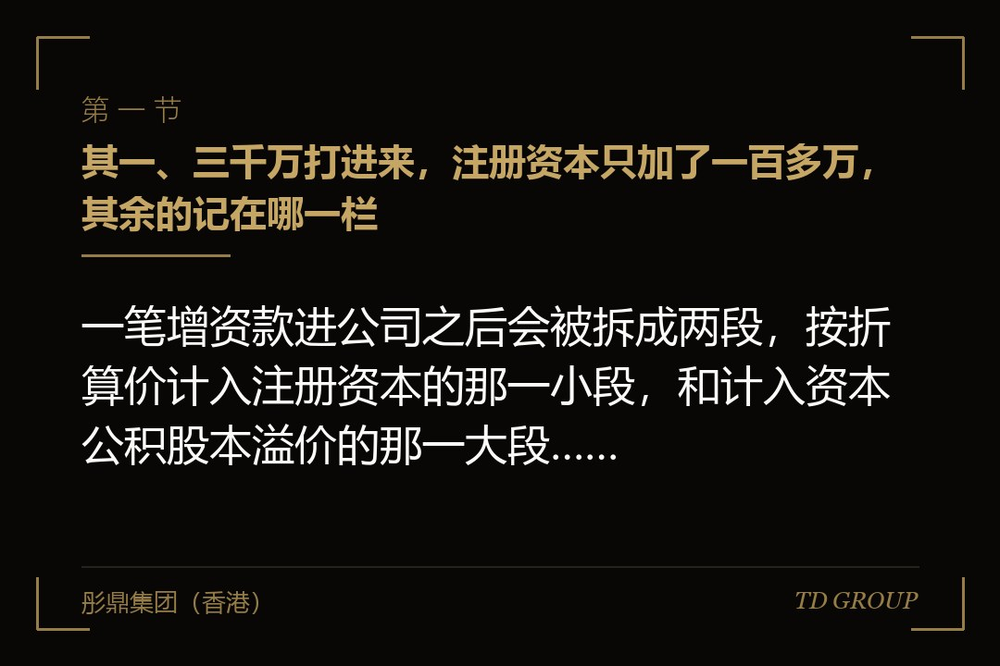
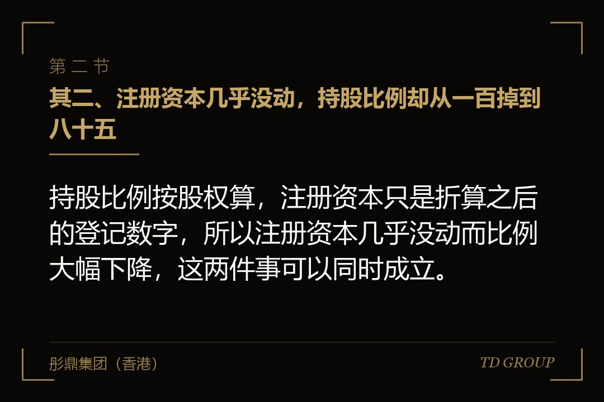
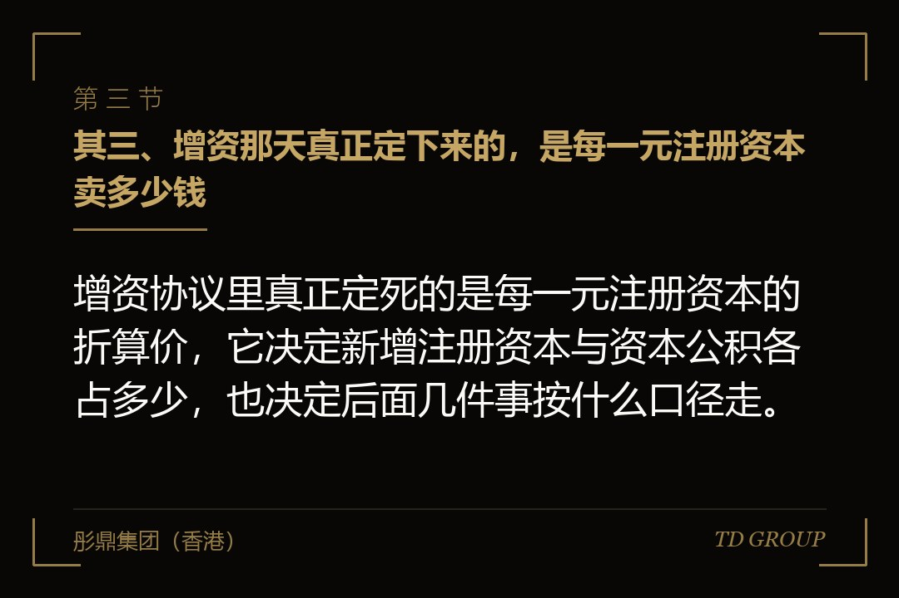

其一、三千万打进来，注册资本只加了一百多万，其余的记在哪一栏

结论先行：一笔增资款进公司之后会被拆成两段，按折算价计入注册资本的那一小段，和计入资本公积股本溢价的那一大段，两段都在公司账上归公司使用。
先把这笔账摊开。上面那家公司原来的注册资本是八百万，投资方出三千万拿百分之十五。交割之后投资方占百分之十五，原股东合计占百分之八十五，而原股东名下的出资额一分钱没变，还是八百万。
八百万对应百分之八十五，那么百分之十五对应多少？大约一百四十一万。所以这一轮新增的注册资本就是一百四十一万：投资方那三千万里的一百四十一万计入实收资本，其余的两千八百五十九万计入资本公积，名目是股本溢价。
这两笔钱在公司账户里本来就是同一笔钱，没有任何一分被锁在别处。区别在名分：一段是股东对公司的出资额、是登记机关在册的数字；另一段是股东为了取得这份出资额额外付出的价钱，会计上归到资本公积。
打个比方。一张演出票面值印着一百，转手的人卖八百。买票的人真付了八百，票面上还是印着一百。注册资本就是那个票面，资本公积是多付的那七百——钱是真金白银掏出去了，但票面不会因此改成八百。
所以注册资本这四个字，从来就不是公司账上有多少钱的意思。融资之前几乎没有人需要用到这个区别，融资之后它会连着影响好几件事。
其二、注册资本几乎没动，持股比例却从一百掉到八十五

结论先行：持股比例按股权算，注册资本只是折算之后的登记数字，所以注册资本几乎没动而比例大幅下降，这两件事可以同时成立。
创始人最直观的困惑通常是这一句：我的出资额一分没少，为什么持股比例从原来的全部变成了百分之八十五。答案在分母上——原来的分母是八百万，只有他一个人；增资之后分母变成九百四十一万，多出来的那一百四十一万挂在投资方名下。他的八百万除以九百四十一万，就是百分之八十五。
这里容易绕进去的一点是：稀释的幅度由新增了多少注册资本决定，而不是由投资方打进来多少钱决定。同样三千万，谈的是投后两个亿，投资方占百分之十五；谈的是投后一个亿，投资方占百分之三十，新增的注册资本也要跟着往上走。
换个说法，这条链的方向是从上往下的：估值定的是比例，比例定的是新增注册资本，新增注册资本定的是资本公积那一栏多出多少。它不是从注册资本往上倒推出来的。估值本身怎么谈另有专文，这里只需要知道它站在这条链的最上游。
有家做宠物医疗连锁的公司，创始人在谈融资之前特意把注册资本从五十万提到五千万，理由是这样显得公司大一点。等到真进投资方，按同样的比例折算，新增的注册资本就从几十万变成了几百万——公司多背了一笔认缴责任，而估值一分钱没多。
其三、增资那天真正定下来的，是每一元注册资本卖多少钱

结论先行：增资协议里真正定死的是每一元注册资本的折算价，它决定新增注册资本与资本公积各占多少，也决定后面几件事按什么口径走。
实务里这句话通常写成：投资方以人民币三千万元认缴公司新增注册资本一百四十一万元，其中一百四十一万元计入注册资本，其余计入资本公积。读起来平平无奇，但它是这一轮全部折算的依据。
这一句里藏着一个价格。三千万除以一百四十一万，约等于每一元注册资本二十一元多。这个数在协议里往往不单独写出来，可它是后面所有数字的源头，也是中介机构日后逐笔核对时真正在核的东西。
折算价一旦定下来，后面的口径就都跟着定了：本轮股权表怎么改、变更登记材料上的数字怎么填、出资凭证怎么开、下一轮进来的人按什么价格比照。这几样彼此要能对上，对不上就要有人出来解释。
有家做建筑节能材料的公司，在一份补充文件里把折算价写成了另一个数，与主协议对不上。签的时候没人注意，两年后申报材料要说明历次股本演变，会计师把两份文件摆在一起，问的头一句话就是：以哪一份为准。
还有一层要提前说清楚：钱到账不等于可以随便花。多数协议会同时写资金用途、共管安排或者分期到位，那是另一条线上的事，另有专文，本篇不展开。
其四、注册资本这个数本身是有代价的
结论先行：注册资本不是写得越大越好，它对应股东的认缴责任、认缴期限与将来减资的基数，写大一次要背很久。
最直接的一层是认缴责任。股东按自己认下的出资额对公司承担责任，认了多少就是多少。公司经营顺利时这行字毫无存在感；一旦公司还不上外面的钱，没有实际缴到位的那一部分，是可以被主张的。
第二层是认缴期限。章程上写着哪一年缴完，这个年份不是随手填的：它决定这笔钱什么时候必须真的进公司，也决定股权在此之前转让时，受让方要不要接下这份还没缴完的责任。期限写得越长，转让时对方越会要求把价钱折下去。
第三层是减资的基数。将来若要把注册资本减下来，走的是减资程序：作出决议、通知已知的债权人、按规定公告，还要给债权人主张清偿或者提供担保的机会。这套程序不是几天能走完的，具体要求以主管机关当时有效的规则与口径为准。
有家做农机租赁服务的公司，早年把注册资本一口气写到一个亿，认缴期限写到二十年之后。等到要引进投资方，尽调时对方直接把这一条列进了先决条件，要求先减到一个与实际经营匹配的数——而那次减资前后走了将近半年，投资款也就压了半年。
有位创始人在华尔街彤鼎俱乐部的活动上讲过一句话，说得很实在：注册资本写多少，是创始人在没有任何人提醒的情况下，替自己签下的一份长期承诺。资本公积那一栏可以很大，注册资本那一栏没必要跟着大。
其五、资本公积能做什么，不能做什么
结论先行：资本公积在方向上可用于转增股本与按规定顺序处理亏损，但它不是经营成果，不能像未分配利润那样直接分给股东。
先说不能做的那一件，因为它最容易被误会。资本公积不是公司赚来的钱，是股东为了取得股权多付的那部分价钱。它在账上属于所有者权益，但它不是可供分配的利润，公司不能拿它当利润分给股东。
曾有创始人问过一句很实在的话：这笔钱明明就在公司账上，为什么不能分。答案在于分红分的是经营成果，而这笔钱是股东自己交进来的、本金性质的投入。把它原路分回去，性质上更接近退还出资，那要走的是完全另一套程序。
能做的那几件，方向上包括转增股本与按规定顺序处理亏损。这里有先后之分：公司有亏损时，通常要先按规定用其他方式处理，不能随手拿资本公积去平账。具体顺序与限制以主管机关当时有效的规则与口径为准，且不同类型的公司之间可能并不相同。
还有一层实务上的事：谁有权动它。资本公积的处置属于股东会决议事项，而融资之后的股东会里通常坐着投资方。多数股东协议会把资本公积的用途变更写进需要投资方事前同意的清单，创始人签的时候未必留意，用的时候才发现要多问一个人。
有家做第三方检测实验室的公司，账上有一大笔股本溢价，创始人想拿它做一次转增，被投资方以需要事前书面同意为由挡了两个月。不是投资方反对这件事，是当初谁都没提前谈过这一条，只能重新走一遍流程。
其六、转增股本：股数变多、比例不变，而自然人股东可能要多一道事
结论先行：转增股本之后股东名下的出资额按原比例变多、持股比例一点不动，但对自然人股东可能产生纳税义务，动手之前一定要问清楚。
转增股本是把资本公积的一部分转成注册资本。做完之后，每个股东名下的出资额按原比例同步变大，谁也没多、谁也没少，股权表上的百分比一个都不动。
从公司这一侧看，这是把一栏里的钱挪到另一栏，账上的总额分文未变。从对外的观感上看，注册资本变大了。不少公司做这件事的动机就是后者——投标要求、资质评审、合作方看着安心。
代价在两头。一头是上一节说过的：注册资本一旦变大，认缴责任与减资基数跟着变大，往回减要走整套减资程序。另一头更容易被忽略——对自然人股东而言，转增在特定情形下可能产生纳税义务，而那笔钱要真金白银交出去，公司并没有因此给任何人发过一分现金。
这一句必须写死：是否产生、按什么口径计算、有没有可适用的特别安排，一律以主管机关当时有效的规则与口径为准，且不同来源的资本公积、不同性质的股东、不同类型的公司可能完全不同。这件事在动手之前问清楚，比事后补救便宜得多。
有家做工业清洗设备的公司在申报前做了一次大额转增，几位自然人股东在半年后收到了一笔要缴的钱，金额不算小，而当时公司账上并没有给他们分过现金。这件事本身没什么不对，只是没有人在动手之前替他们算过这一笔。
其七、退出、回购与减资那天，钱是从哪一层出来的
结论先行：退出与回购那天钱从哪一层出来，取决于当年那笔增资款被分成了哪两段，以及公司账上后来还剩下什么。
退出的常见路径有几条，钱的来源各不相同。老股转让的钱由受让方直接付给转让方本人，与公司账上有多少钱无关，公司这一层完全不动。这条路最省事，也最不受注册资本与资本公积的影响。
由公司回购是另一回事。公司要拿自己的钱把投资方手上的股权买回来，而公司能不能这么做、按什么程序做、需不需要相应减少注册资本，都是有条件的。创始人以个人名义承担回购义务是另一种安排，与公司这一层的钱无关，另有专文。
减资那条路更慢：决议、通知已知债权人、按规定公告、给债权人主张清偿或提供担保的机会，一步都少不了。有投资方在的公司通常还要先拿到投资方同意。所以协议里写到期由公司回购这句话时，值得同时问一句：那一天公司拿什么钱、走哪一套程序、大概要走多久。
资本公积在这一段里的作用常被高估。它在账上是权益，不是随时可以支取的现金——公司当年拿到的钱早就投进了设备、人员和市场。退出那天能拿出多少现金，看的是经营和银行余额，不是那一栏的数字有多大。
有家做智能仓储设备的公司，协议里写了一条到期由公司回购，几年后真的触发了。摊开账一看，资本公积那一栏还是当年那个数，银行账上却剩下不到十分之一——钱都变成了仓库里的设备。这条路走不通，最后只能重新回到谈判桌上。
收口、交割之前，公司要能一口气回答的这几个问题
结论先行：交割之前公司要能一口气答出本轮增加多少注册资本、溢价多少、认缴期限写到哪一年、资本公积以后打算怎么处置、谁有权动它。
这几个问题看着基础，实际的分界线也就在这里：答得出来的公司，融资之后账面清清爽爽；答不出来的，往往要在下一轮尽调时被人从头问一遍，而那时候每一条都要附上解释和补充文件。
逐条来看。本轮新增多少注册资本、折算价是多少，这两个数要与协议、变更登记材料、出资凭证三处对得上。认缴期限写到哪一年，要与公司真实的经营节奏对得上，不要为了好看往后拖。
资本公积以后打算怎么处置，是最容易被跳过的一条。转增还是留着、什么时候动、动之前谁要点头，这三件事在签协议那一刻讲清楚只需要半小时，等到真想动它的时候再谈，往往就是两个月起步。
还有一条是历史遗留：公司在此之前若做过增资、减资或者转增，那几次的折算价与账务处理，现在就该翻出来对一遍。这类问题拖得越久越贵，因为经手的人会走、凭证会散、当年的会计口径也未必还有人记得。
华尔街彤鼎俱乐部里有位做过两轮融资的创始人说得更直接：这几个问题，头一轮融资的时候他一个都答不上来；第二轮之前花了三个月才把它们理顺，而理顺之后那一轮的尽调，比上一轮少问了一半的话。
本质上，注册资本与资本公积讲的是同一件事的两面——钱进来了多少，和这笔钱在纸面上被记成了什么。前者决定公司能做多少事，后者决定几年之后有多少事需要解释。这件事越早理清楚，代价越小。